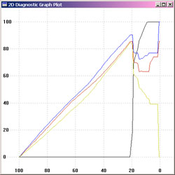
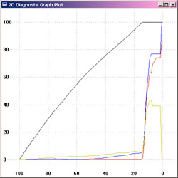
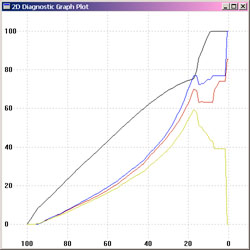
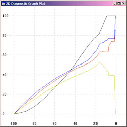

Typical usage Scenarios and Examples
Choose a task from the list below. For more details on alternative
options, follow the links to the individual utilities being used.
Profiling Displays
Argyll supports adjusting, calibrating and profiling of displays using
one of a number of
instruments - see instruments for a
current list. Adjustment and calibration are prior
steps to profiling, in which the display is adjusted using it's
screen controls, and then per channel lookup tables are created
to make it meet a well behaved response
of the desired type. The process
for creating a display profile is then similar to that of all other
output
devices. First a set of device colorspace test values needs to be
created to exercise the display, then these values need to be
displayed, while taking measurements of the resulting colors using the
instrument. Finally, the device value/measured color values need to be
converted into an ICC profile.
Adjusting and Calibrating Displays
The first step is to decide what the target should be for adjustment
and calibration.
This boils down to three things: The desired brightness, the desired
white point, and the desired response curve. The native brightness and
white points of a display may be different to the desired
characteristics for some purposes. For instance, for graphic arts use,
it might be desirable to run with a warmer white point of about 5000
degrees Kelvin, rather than the default display white point of 6500 to
9000 Kelvin. Some LCD displays are too bright to compare to printed
material under available lighting, so it might be desirable to reduce
the maximum brightness.
You can run dispcal -r to check on how
your display is currently set up. (you may have to run this as dispcal
-yl -r for an LCD display, or dispcal
-yc -r for a CRT display with most of the colorimeter
instruments. If so, this will apply to all of the following examples.)
Once this is done, dispcal can be run to
guide you through the display adjustments, and then calibrate it. By
default, the brightness and white point will be kept
the same as the devices natural brightness and white point. The default
response curve is a gamma of 2.2 on MSWindows and X11 systems, and 1.8
on Apple OSX systems. 2.2 is close to that of many
monitors, and close to that of the sRGB colorspace.
A typical calibration that leaves the brightness and white point alone,
might be:
dispcal -v TargetA
which will result in a "TargetA.cal" calibration file, that can then be
used during the profiling stage.
If the absolutely native response of the display is desired during
profiling, then calibration should be skipped, and the linear.cal file
from the "ref" directory used instead as the argument to the -k flag of
dispread.
Dispcal will display a test window in the middle of the screen,
and issue a series of instructions about placing the instrument on the
display. You may need to make sure that the display cursor is not in
the test window, and it may also be necessary to disable any
screensaver and powersavers before starting the
process, although both dispcal
and dispread will attempt to
do this for you. It's also highly desirable on CRT's, to clear your
screen
of
any white
or bright background images or windows (running your shell window with
white text on a black background helps a lot here.), or at least keep
any bright areas away from the test window, and be careful not to
change anything on the display while the readings
are taken. Lots of bright images or windows can affect the ability to
measure
the black point accurately, and changing images on the display can
cause inconsistency in the readings, and leading to poor results. LCD displays seem to be
less influenced by what else is on the screen.
If dispcal is run
without arguments, it will provide a usage screen. The -c parameter allows selecting a
communication port for an instrument, or selecting the instrument you
want to use, and the -d
option allows selecting a target
display on a multi-display system. On some multi-monitor systems, it
may not be possible to independently calibrate and profile each display
if they appear as one single screen to the operating system, or if it
is not possible to set separate video lookup tables for each
display. You can change the position and size of the test
window using the -p parameter.
You can determine how best to arrange the test window, as well as
whether each display has separate video lookup capability, by
experimenting with the dispwin utility.
For a more detailed discussion on interactively adjusting the display
controls using dispcal, see dispcal-adjustment. Once you have
adjusted and calibrated your display, you can move on to the next step.
Once you have calibrated and profiled your display, you can keep it
calibrated using the dispcal -u option.
Creating display test values
The first step in profiling any output device, is to create a set
of device colorspace test values. The important parameters needed are:
- What colorspace does the device use ?
- How many test patches do I want to use ?
- What information do I already have about how the device behaves ?
For a display device, the colorspace will be RGB. The number of
test patches will depend somewhat on what quality profile you want to
make, what type of profile you want to make, and how long you are
prepared to wait when testing the display.
At a minimum, a few hundred values are needed. A matrix/shaper type of
profile can get by with fewer test values, while a LUT based profile
will give better results if more test values are used. A typical number
might be 200-600 or so values, while 1000-2000 is not an unreasonable
number for a high quality characterization of a display.
To assist the choice of test patch values, it can help to have a rough
idea of how the device behaves. This could be in the form of an ICC
profile of a similar device, or a lower quality, or previous profile
for that particular device. If one were going to make a very high
quality LUT based profile, then it might be worthwhile to make up a
smaller, preliminary shaper/matrix profile using a few hundred test
points, before embarking on testing the device with several thousand.
Lets say that we ultimately want to make a profile for the device
"DisplayA", the simplest approach is to make a set of test values that
is
independent of the characteristics of the particular device:
targen -v -d3 -f500 DisplayA
If there is a preliminary or previous profile called "OldDisplay"
available, and we want to try creating a "pre-conditioned" set of test
values that will more efficiently sample the device response, then the
following would achieve this:
targen -v
-d3 -f500
-A.8 -cOldDisplay.icm
DisplayA
The output of targen will be the file DisplayA.ti1, containing
the device space test values, as well as expected CIE values used for
chart recognition purposes.
Taking readings from a display
First it is necessary to connect your measurement instrument to your
computer, and check which serial port it is connected to. In the
following example, it is assumed that the instrument is connected to
COM port 1, the
default port. Invoking dispread so as to display the usage information
(by
using a flag -? or --) will list the identified serial and USB ports,
and their
labels. If we created a calibration for the display using dispcal, then we will want to use this when we
take the display readings (e.g. TargetA.cal from the calibration
example)..
dispread -v -k
TargetA.cal DisplayA
dispread will display a test window in the middle of the screen,
and issue a series of instructions about placing the instrument on the
display. You may need to make sure that the display cursor is not in
the test window, and it may also be necessary to disable any
screensaver before starting the
process. Exactly the same facilities are provided to select alternate
displays using the -d
parameter, and an alternate location and size for the test window using
the -p parameter as with dispcal.
Creating a display profile
There are two basic choices of profile type for a display, a
shaper/matrix profile, or a LUT based profile. They have different
tradeoffs. A shaper/matrix profile will work well on a well behaved
display, that is one that behaves in an additive color manner, will
give
very smooth looking results, and needs fewer test points to create. A
LUT based profile on the other hand, will model any display behaviour
more accurately, and can accommodate gamut mapping and different intent
tables. Often it can show some unevenness and contouring in the results
though.
To create a matrix/shaper profile, the following suffices:
profile -v -D"Display A" -qm
-as DisplayA
For a LUT based profile, where gamut mapping is desired, then a source
profile will need to be provided to define the source gamut. For
instance, if the display profile was likely to be linked to a CMYK
printing source profile, say "swop.icm", then the following would
suffice:
profile -v -D"Display A"
-qm -S
swop.icm -cpp -dmt
DisplayA
Make sure you check the delta E report at the end of the profile
creation, to see if the profile is behaving reasonably.
If a calibration file was used with dispread,
then it will be converted to a vcgt tag in the profile, so that the
operating system or other system color utilities load the lookup curves
into the display hardware, when the profile is used.
Installing a display profile
Installing a display profile for your monitor is very operating system
dependent. On some systems it is not the operating system itself that
supports display profiles, but individual applications, or helper
programs.
On Microsoft Windows, display
profiles are typically in one of the
following directories:
Windows Me and 98: C:\Windows\System\Color
Windows NT: C:\Winnt\system32\spool\drivers\color
Window 2000 and XP:
C:\Windows\system32\spool\drivers\color
The profile can be associated with your display by using the Display
Property dialog, advanced settings, Color management tab. This in
itself does not cause the profile to be made use of anywhere in your
system.
If you are using Adobe Photoshop on your system, then you can tell
it to use your monitor profile by editing the appropriate registry key,
typically "My
Computer\HKEY_LOCAL_MACHINE\SOFTWARE\Adobe\Color\Monitor\Monitor0", to
contain the name of the display profile, and then restart Photoshop
This is the simplest way of ensuring that the Adobe calibration loader
utility Adobe Gamma loads the video hardware lookup tables from the
vcgt tag, and
uses the profile as its display profile.
The adobe gamma utility can be told to use your profile, but the
procedure is slightly tricky: Open adobe gamma from photoshop (in the
Help->Color Management... menu item), select "Open Adobe Gamma", and
select the "Load.." button. Select your profile and "Open". Select "OK"
in the Adobe Gamma, it will then ask you to save it's modified version
of your profile under a different name. Chose a name for the modified
profile, and save it. Exit from Photoshop. Copy the profile you want to
use, over the modified profile that you saved in Adobe Gamma. (If you
don't do the last step, the profile Photoshop will be using will have
been modified in strange ways from what you intended.)
Other Microsoft Windows applications may come with
"Gamma/VCGT/RAMDAC/Video LUT"
loader utilities, consult their documentation and check your Start Menu
Startup folders. If you don't want to use any of these 3rd party
utilities, you can also use the dispwin
utility to do this for you, as it takes either a .cal or ICC file as an argument. The xcalib
utility could also be used.
Newer version of Microsoft Windows (XP) have better ways of
handling this. For instance, try right clicking on the profiles icon,
and see if there is an "install profile" option, and there is a
Color Control Panel Applet for Windows XP available for
download from
Microsoft, which handles loading the profile vcgt tag into displays.
On Apple OSX, the display
profile are in one of the following
locations:
/Network/Library/ColorSync/Profiles
/System/Library/Colorsync/Profiles
/Library/ColorSync/Profiles
~/Library/ColorSync/Profiles
Generally you should only copy new profiles to either of the last two
locations, the former for profile you want to be available to all users
of a machine, and the latter, user specific location if you want the
profile to only be available to that user. You can then launch the
"System Preferences->Displays->Color" utility, to select the
profile as the one to use for your display. Note that the contents of
the description tag will be used to identify the profile.
On Linux and other Unix style systems, there is no
universally agreed location for ICC profiles yet,
although the following locations have been suggested at various times:
/usr/share/color/icc
~/.color/icc
/usr/local/share/Scribus/profiles
and other programs may use other locations.
If you want the display calibration to be loaded, you should consider
installing a utility to do so at startup, such as dispwin
or xcalib.
Profiling Scanners
Because a scanner is an input device, it is necessary to go about
profiling it in quite a different way to an output device. To profile
it, a test chart is needed to exercise the scanner response, to which
the CIE values for each test patch is known. Generally standard
reflection test charts are used for this purpose.
Types of test charts
The most common and popular test chart for scanner profiling is the
IT8.7/2 chart. This is a standard format chart generally reproduced on
photographic film, containing about 264 test patches. The Kodak Q-60
Color Input Target is a typical example:

Other popular charts are the GretagMacbeth ColorChecker DC and
ColorChecker SG charts:


The GretagMacbeth Eye-One Pro Scan Target 1.4 can also be used:

Also supported is the HutchColor
HCT :

Taking readings from a scanner
The test chart you are using needs to be placed on the scanner, and the
scanner needs to be configured to a suitable state, and restored to
that
same state when used subsequently with the resulting profile. The chart
should
be scanned, and saved to a TIFF format file. I will assume the
resulting
file is called scanner.tif. The raster file need only be roughly
cropped so as to contain the test chart (including the charts edges).
The second step is to extract the RGB values from the scanner.tif file,
and match then to the reference CIE values.
To locate the patch values in the scan, the scanin utility
needs to
be given a template .cht file
that describes the features of the chart, and
how
the test patches are labelled. Also needed is a file containing the CIE
values for each of the patches in the chart.
For an IT8.7/2 chart, this is the
ref/it8.ch
file supplied with Argyll, and the manufacturer will will supply
an
individual or batch average file long with the chart containing
this
information, or downloadable from their web site.
For the ColorChecker DC chart, the
ref/ColorCheckerDC.cht file
should be used, and there will be a ColorCheckerDC reference
file supplied by GretagMacbeth with the chart.
For the ColorCheckerSG chart, the
ref/ColorCheckerSG.cht file
should be used, and there will be a
ColorCheckerSG.txt
supplied with the chart that contains the spectral reference
information. To convert this to a
ColorCheckerSG.cie reference file,
follow the following steps:
logo2cgats
ColorCheckerSG.txt ColorCheckerSG.ti3
spec2cie
ColorCheckerSG.ti3 ColorCheckerSG.cie
For the Eye-One Pro Scan Target 1.4 chart, the
ref/i1_RGB_Scan_1.4.cht
file should be used, and as there is no reference file accompanying
this chart, the chart needs to be read with an instrument (usually the
Eye-One Pro). This can be done using printread, making use of the
chart reference file
ref/i1_RGB_Scan_1.4.ti2:
printread -n -a
i1_RGB_Scan_1.4
and then rename the resulting
i1_RGB_Scan_1.4.ti3
file to
i1_RGB_Scan_1.4.cie
For the HutchColor HCT chart, the
ref/Hutchcolor.cht file
should be used, and the reference
.txt
file downloaded from the website.
For any other type of chart, a
chart recognition template file will need to be created (this is beyond
the scope of the current documentation).
To create the scanner .ti3 file, run the scanin utility as
follows
(assuming an IT8 chart is being used):
scanin -v scanner.tif It8.cht It8ref.txt
"It8ref.txt" is assumed to be the name of the CIE reference file
supplied by the chart manufacturer. The resulting file will be named "scanner.ti3".
scanin will process 16 bit per
component .tiff files, which (if the scanner is capable of creating
such files), may improve the quality of the profile.
If you have any doubts about the correctness of the chart recognition,
or the subsequent profile's delta E report is unusual, then use the
scanin diagnostic flags -dipn and examine
the diag.tif diagnostic file.
Creating a scanner profile
Similar to a display profile, a scanner profile can be either a
shaper/matrix or LUT based profile. Well behaved scanners will
probably give the best results
with a shaper/matrix profile, but if the fit is poor, consider using a
LUT
type profile.
If the purpose of the scanner profile is to use it as a substitute for
a
colorimeter, then the -u flag should be used to avoid clipping
values above the white point. Unless the shaper/matrix type profile is
a very good fit, it is probably advisable to use a LUT type profile in
this situation.
To create a matrix/shaper profile, the following suffices:
profile -v -D"Scanner A" -qm -as
scanner
For a LUT based profile then the following would be used:
profile -v -D"Scanner A"
-qm
scanner
For the purposes of a poor mans colorimeter, the following would
generally be used:
profile -v -D"Scanner A"
-qm -u
scanner
Make sure you check the delta E report at the end of the profile
creation, to see if the profile is behaving reasonably.
Profiling Printers
The overall process is to create a set of device measurement target
values, print them out, measure them, and then create an ICC profile
from the measurements. If the printer is an RGB based printer, then the
process is only slightly more complicated than profiling a display. If
the printer is CMYK based, then some additional parameters are required
to set the total ink limit (TAC) and black generation curve.
Creating a print test chart
The first step in profiling any output device, is to create a set
of device colorspace test values. The important parameters needed are:
- What colorspace does the device use ?
- How many test patches do I want to use/what paper size do I want
to use ?
- What instrument am I going to use to read the patches ?
- If it is a CMYK device, what is the total ink limit ?
- What information do I already have about how the device behaves ?
Most printers running through simple drivers will appear as if they are
RGB devices. Other drivers will drive a printer more directly, and will
expect a CMYK profile. [Currently Argyll is not capable of creating an
ICC profile for devices with more colorants than CMYK. When this
capability is introduced, it will by creating an additional separation
profile which then allows the printer to be treated as a CMY or CMYK
printer.] One way of telling what sort
of profile is expected for your device is to examine an existing
profile for
that device using iccdump.
The number of test patches will depend somewhat on what quality profile
you want to make, as well as the effort needed to read the number of
test values. Generally it is convenient to fill a certain paper size
with the maximum
number of test values that will fit.
At a minimum, for an RGB device, a few hundred values are needed.
For high quality CMYK profiles, 1000-3000 is not an unreasonable number
of
patches.
To assist the determination of test patch values, it can help to have a
rough idea of how the device behaves. This could be in the form of an
ICC profile of a similar device, or a lower quality, or previous
profile for that particular device. If one were going to make a very
high quality Lut based profile, then it might be worthwhile to make up
a smaller, preliminary shaper/matrix profile using a few hundred test
points, before embarking on testing the device with several thousand.
The documentation for the targen utility
lists
a
table of
paper
sizes and number of patches for typical situations.
For a CMYK device, a total ink limit usually needs to be specified.
Sometimes
a device will have a maximum total ink limit set by its manufacturer or
operator,
and some CMYK systems (such as chemical proofing systems) don't have
any
limit. Typical printing devices such as Xerographic printers, inkjet
printers
and printing presses will have a limit. The exact procedure for
determining an
ink limit is outside the scope of this document, but one way of going
about this might be to generate some small (say a few hundred patches)
with targen & pritntarg with different total ink limits, and
printing them out, making the ink limit as large as possible without
striking problems that are caused by too much ink.
Generally one wants to use the maximum possible amount of ink to
maximize the gamut available on the device. For most CMYK devices, an
ink limit between 200 and 400 is usual, but and ink limit of 250% or
over is generally desirable for reasonably dense blacks and dark
saturated colors. And ink limit of less than 200% will begin to
compromise the fully saturated gamut, as secondary colors (ie
combinations of any two primary colorants) will not be able to reach
full strength.
Once an ink limit is used in printing the characterization test chart
for a device, it becomes a critical parameter
in knowing what the characterized gamut of the device is. If after
printing the test chart, a greater ink limit
were to be used, the the software would effectively be extrapolating
the device behaviour at total ink levels
beyond that used in the test chart, leading to inaccuracies.
Generally in Argyll, the ink limit is established when creating the
test chart values, and then carried through the
profile making process automatically. Once the profile has been made
however, the ink limit is no longer recorded, and you, the user, will
have to keep track of it if the ICC profile is used in any program than
needs to know the usable gamut of the device.
Lets consider two devices in our examples, "PrinterA" which is an RGB
device, and "PrinterB" which is CMYK, and has a target ink limit of
250%.
The simplest approach is to make a set of test values that is
independent
of the characteristics of the particular device:
targen -v -d3 -f1053 PrinterA
targen -v -d4 -l260 -f1053 PrinterB
The number of patches chosen here happens to be right for an A4 paper
size being read using a Spectroscan instrument. See the table in the targen
documentation for some other suggested numbers.
If there is a preliminary or previous profile called "OldPrinterA"
available, and we want to try creating a "pre-conditioned" set of test
values that will more efficiently sample the device response, then the
following would achieve this:
targen -v -d3 -f1053 -c OldPrinterA -A.8
PrinterA
targen -v -d4 -l260 -f1053 -c OldPrinterB
-A.8 PrinterB
The output of targen will be the file PrinterA.ti1 and
PrinterB.ti1 respectively, containing the device space test values, as
well as expected CIE values used for chart recognition purposes.
The next step is turn the test values in to a PostScript test file that
can printed on the device. The basic information that needs to be
supplied is the type of instrument that will be used to read the
patches, as well as the paper size it is to be formatted for.
For an X-Rite DTP41, the following would be typical:
printtarg -v
-i41 -pA4
PrinterA
For a Gretag Eye-One Pro, the following would be typical:
printtarg -v
-ii1 -pA4
PrinterA
For using with a scanner as a colorimeter, the Gretag Spectroscan
layout is suitable, but the -s flag
should be used so as to generate a layout suitable for scan
recognition, as well as generating the scan recognition template
files. (You probably want to use less patches with targen, when using the printtarg -s flag, e.g. 1026 patches
for an A4R page, etc.) The following would be typical:
printtarg -v
-s -iSS -pA4R PrinterA
printtarg reads the
PrinterA.ti1
file, creates a PrinterA.ti2 file containing the layout information as
well as the device values and expected CIE values, as well as a
PrinterA.ps file containing the test chart. If the -s flag is used, one or more
PrinterA.cht files is created to allow the scanin
program to recognize the chart.
GSview is a good program to use to check what the PostScript file will
look like, without actually printing it out.
The last step is to print the chart out.
Using a suitable PostScript downloader, print the chart out via a
PostScript interpreter. Alternately, an interpreter like GhostScript
or even Photoshop could be used to rasterize the file into something
that can be printed. Note that it is important that the PostScript
interpreter is setup for a device profiling run, and that any sort of
color conversion of color correction be turned off. If the device has a
calibration system, then it would be usual to have setup and calibrated
the device before starting the profiling run. If Photoshop was to be
used, then
either the chart needs to be a single page, or separate .eps files for
each page should be used, so that they can be converted to raster files
one at a time (see the -e flag).
Reading a print test chart using an instrument
Once the test chart has been printed, the color of the patches needs to
be read using a suitable instrument.
Several different instruments are currently supported, some that need
to be used patch by patch, some read a strip at a time, and some read a
sheet at a time. See instruments for a
current list.
The instrument needs to be connected to your computer before running
the printread command. Both serial port
and USB connected Instruments are supported. A serial port to USB
adapter
might have to be used if your computer doesn't have any serial ports,
and you have a serial interface connected instrument.
If you run printread so as to print out
its usage message (ie. by using a -?
or -- flags), then it will
list any identified serial ports or USB connected instruments, and
their corresponding number for
the -c option. By default, printread will try to connect to the first
available USB instrument, or an instrument on the first serial port.
The only arguments required is
to specify the basename of the .ti2 file. If a non-default serial port
is to be used, then the -c
option would also be specified.
e.g. for a Spectroscan on the second port:
printread -c2
PrinterA
For a DTP41 to the default serial port:
printread
PrinterA
printread will interactively
prompt you through the process of reading each sheet or strip. See printread for more details on the responses
for each type of instrument. Continue with Creating
a printer profile.
Reading a print test chart using a scanner
Argyll supports using a scanner as a substitute for a colorimeter.
While a scanner is no replacement for a color measurement
instrument, it may give acceptable results in some situations, and may
give better results than a generic profile for a printing device.
The main limitation of the scanner-as-colorimeter approach are:
* The scanner dynamic range and/or precision may not match the printers
or what is required for a good profile.
* The spectral interaction of the scanner test chart and printer test
chart with the scanner
spectral response can cause color errors.
* Spectral differences caused by different black amounts in the print
test chart can cause
color errors.
* The IT8 chart gamut may be so much smaller than the printers that the
scanner profile is too inaccurate.
The end result is often a profile that has a slight color cast to,
compared to a profile created using a colorimeter or spectrometer..
It is assumed that you have created a scanner profile following the procedure outline above. For best possible results it
is advisable to both profile the scanner, and use it in scanning the
printed test chart, in as "raw" mode as possible (i.e. using 16 bits
per component scans, if the scanner is
capable of doing so; not setting white or black points). It is
generally advisable to create a LUT type
scanner profile, and use the -u flag to
avoid clipping scanned value whiter than the scanner calibration chart.
Scan your printer chart (or charts) on the scanner previously profiled.
The
scanner must be configured and used exactly the same as it was when it
was profiled.
I will assume the resulting scan file is called PrinterB.tif (or PrinterB1.tif, PrinterB2.tif etc. in the case of
multiple charts). As with profiling the scanner, the raster file need
only be roughly cropped so as to contain the test chart.
The scanner recognition files
created when printtarg was run
is assumed to be called PrinterB.cht.
Using the scanner profile created previously (assumed to be called scanner.icm), the printer test chart
scan patches are converted to CIE values using the scanin utility:
scanin -v -c PrinterB.tif
PrinterB.cht scanner.icm
PrinterB
If there were multiple test chart pages, the results would be
accumulated page by page using the -ca
option, ie., if there were 3 pages:
scanin -v -c PrinterB1.tif
PrinterB1.cht scanner.icm
PrinterB
scanin -v -ca PrinterB2.tif
PrinterB2.cht scanner.icm
PrinterB
scanin -v -ca PrinterB3.tif
PrinterB3.cht scanner.icm
PrinterB
Now that the PrinterB.ti3 data
has been obtained, the profile continue in the next section with Creating a printer profile.
If you have any doubts about the correctness of the chart recognition,
or the subsequent profile's delta E report is unusual, then use the
scanin diagnostic flags -dipn and examine
the diag.tif diagnostic file.
Creating a printer profile
Creating an RGB based printing profile is very similar to creating a
display device profile. For a CMYK printer, some additional information
is needed to set the black generation.
Where the resulting profile will be used conventionally (ie. using icclink -s, or cctiff -l or most
other "dumb" CMMs) it is important to specify that gamut mapping should
be computed for the output (B2A) perceptual and saturation tables. This
is done by specifying a device profile as the parameter to the profile -S flag.
When you intend to create a "general use" profile, it can be a good
technique to specify the source gamut as the opposite
type of profile to that being created, i.e. if a printer profile is
being
created, specify a display profile (e.g. sRGB) as the source gamut. If
a display profile is being created, then specify a printer profile as
the source
(e.g. SWOP). When linking to the profile you have created this
way as the output profile, then use perceptual intent if the source is
the opposite type, and relative colorimetric if it is the same type.
"Opposite type of profile" refers to the native gamut of the device,
and what its fundamental nature is, additive or subtractive. An
emissive display will have additive primaries (R, G & B), while a
reflective print, will have subtractive primaries (C, M, Y &
possibly others), irrespective of what colorspace the printer is driven
in (a printer might present an RGB interface, but internally this will
be converted to CMY, and it will have a CMY type of gamut).
Because of the complimentary nature of additive and subtractive device
primary colorants, these types of devices have the most different
gamuts, and hence need the most gamut mapping to convert from one
colorspace to the other.
If you are creating a profile for a specific purpose, intending to link
it to a specific input profile, then you will get the best results by
specifying that source profile as the source gamut.
If a profile is only going to be used as an input profile, or is going
to be used with a "smart" CMM (e.g. icclink
-g or -G),
then it can save considerable processing time and space if the -b flag
is used, and the -S flag not used.
For an RGB printer intended to print RGB originals, the following might
be a typical profile usage:
profile -v -D"Printer A" -qm
-S sRGB.icm -cmt -dpp
PrinterA
or if you intent to print from SWOP style CMYK originals:
profile -v -D"Printer A" -qm
-S
swop.icm -cmt -dpp
PrinterA
Choosing a black generation curve (and other CMYK
printer options)
For a CMYK printer, it would be normal to specify the type of black
generation, either as something simple, or as a specific curve. The
documentation in profile for the
details of the options. If you want to experiment with the various
black
generation parameters,
then it might be a good idea to create a preliminary profile (using -ql -b -no, -ni and
no -S), and then used xicclu
to explore the effect of the parameters.
For instance, say we have our CMYK .ti3 file PrinterB.ti3. First we make a
preliminary profile called PrinterBt:
copy PrinterB.ti3 PrinterBt.ti3 (Use "cp"
on Linux or OSX of course.)
profile -v -ql
-b -no -ni
PrinterBt
Then see what the minimum black level down the neutral axis can be:
xicclu -g -kz -fif -ir PrinterBt.icm
Which might be a graph something like this:

Note how the minimum black is zero up to about L* value 20 (= 80%
of the curve), and then jumps up to 70%. This is because we've reached
the total ink limit, and K then has to be substituted for CMY, to keep
the total under the total ink limit.
Then let's see what the maximum black level down the neutral axis can
be:
xicclu -g -kx -fif -ir PrinterBt.icm
Which might be a graph something like this:

Note how the CMY values are fairly low up to an L* value of about 15
(the low levels are setting the neutral color), and then they jump up.
This is because we've reach the point where black on it's own, isn't as
dark as the color that can be achieved using CMY and K. Because the K
has a dominant effect on the hue of the black, the levels of CMY are
often fairly volatile in this region.
Any K curve we specify must lie between the black curves of the above
two graphs.
Let's say we'd like to chose a moderate black curve, one that aims for
about equal levels of CMY and K. We should also aim for it to be fairly
smooth, since this will minimize visual artefacts caused by the limited
fidelity that profile LUT tables are able to represent inside the
profile.
We need our curve to at least reach 70% at an L* value of 20 (80% of
the curve.) Lets also start at 0 at L* == 100 (0% of the curve).
So for a first try:
xicclu -g -kp 0 0 .8 .7 1 -fif
-ir PrinterBt.icm

We've matched the curve at 80% quite well, but the transition isn't
very smooth, and the black level is higher than the CMY for most of the
curve. Let's try making the black curve somewhat concave, and also
adjust the other parameters slightly:
xicclu -g -kp 0 0 .83 .75 .5 -fif
-ir PrinterBt.icm
This is looking pretty good now, but the L* = 100 point has the black
curving up rather suddenly at the start. Lets adjust the black curve so
the black will only start coming in at the 10% mark:
xicclu -g -kp 0 .1 .83 .83 .6 -fif
-ir PrinterBt.icm

The curve parameters can now be used to generate our real profile:
profile -v -D"Printer B" -qm
-kp 0 .1 .83 .83 .6
-S sRGB.icm -cmt -dpp
PrinterB
Overriding the ink limit
Normally the total ink limit
will be read from the PrinterB.ti3
file, and will be set at a level 10% lower than the number used in
creating the test chart values using targen -l.
If you want to override this with a lower limit, then use the -l flag.
profile -v -D"Printer B" -qm
-S sRGB.icm -cmt -dpp -kr
PrinterB
Make sure you check the delta E report at the end of the profile
creation, to see if the profile is behaving reasonably.
Linking Profiles
Two device profiles can be linked together to create a device link
profile,
than encapsulates a particular device to device transform. Often this
step is not necessary, as many systems and utilities will link two
device profiles "on the fly", but creating a device link profile gives
you the option of using "smart CMM" techniques, such as true gamut
mapping, improved inverse transform accuracy, tailored black
generation and
ink limiting.
The overall process is to link the input space and
output space profiles using icclink,
creating a device to device link profile. The device to device link
profile can then be used by cctiff (or other ICC device profile capable
utilities), to color
correct a raster files.
Three examples will be given here, showing the three different modes
than icclink supports.
In simple mode, the two profiles are
linked together in a similar fashion to other CMMs simply using the forward and
backwards color transforms defined by the profiles. Any gamut mapping
is determined by the content of the tables within the two profiles,
together with the particular intent chosen. Typically the same intent
will be used for both the source and destination profile:
icclink -v -qm -s -ip -op SouceProfile.icm DestinationProfile.icm
Source2Destination.icm
In gamut mapping mode, the pre-computed
intent mappings inside the profiles are not used, but instead the gamut
mapping between source and destination is tailored to the specific
gamuts of the two profiles, and the intent parameter supplied to icclink. Additionally, source and
destination viewing conditions should be provided, to allow the color
appearance space conversion to work as intended:
icclink -v -qm -g -ip -cmt -dpp MonitorSouceProfile.icm
DestinationProfile.icm
Source2Destination.icm
In inverse output table gamut mapping mode,
the pre-computed intent mappings inside the profiles are not used, but
instead the gamut mapping between source and destination is tailored to
the specific gamuts of the two profiles, and the intent parameter
supplied to icclink. In
addition, the B2A table is not used in the destination profile, but the
A2B table is instead inverted, leading to improved transform accuracy,
and in CMYK devices, allowing the ink limiting and black generation
parameters to be set.
For a CLUT table based RGB printer destination profile, the following
would be appropriate:
icclink -v -qm -G -ip -cmt -dpp MonitorSouceProfile.icm
RGBDestinationProfile.icm
Source2Destination.icm
For a CMYK profile, the total ink limit needs to be specified (a
typical value being 10% less than the value used in creating the device
test chart), and the type of black generation also needs to be
specified:
icclink -v -qm -G -ip -cmt -dpp -l250 -kr MonitorSouceProfile.icm
CMYKDestinationProfile.icm
Source2Destination.icm
Note that you should adjust the source (-c)
and
destination (-d)
viewing conditions for the type of device the profile represents, and
the conditions under which it will be viewed.
Transforming colorspaces of raster files
Although a device profile or device link profile may be useful with
other programs and systems, Argyll provides the utility cctiff for directly applying a device to device
transform to a TIFF raster file.
The cctiff utility is capable of linking an arbitrary sequence of
device profiles, device links and abstract profiles. Each device
profile can be preceded by the -i
option to indicate the intent that should be used. Both 8 and 16 bit
per component files
can be handled, and up to 8 color channels. The color transform is
optimized to perform the transformation rapidly.
If a device link is to be used, the following is a typical example:
cctiff Source2Destination.icm
infile.tif outfile.tif
If a source and destination profile are to be used, the following
would be a typical example:
cctiff -ip SourceProfile.icm
-ip DestinationProfile.icm
infile.tif
outfile.tif